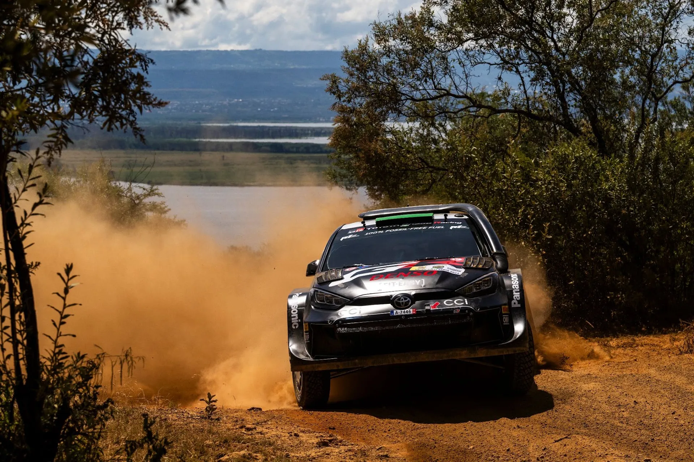
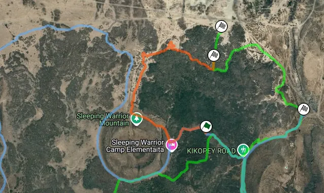
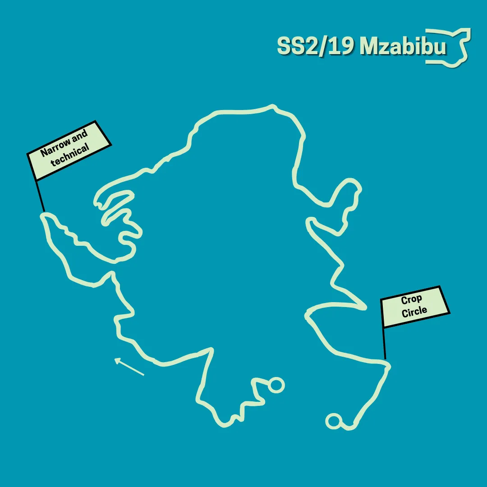
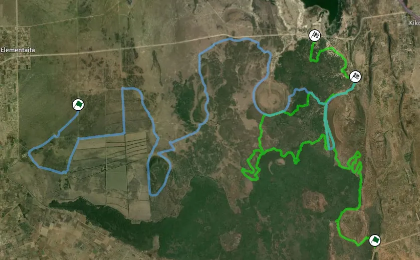
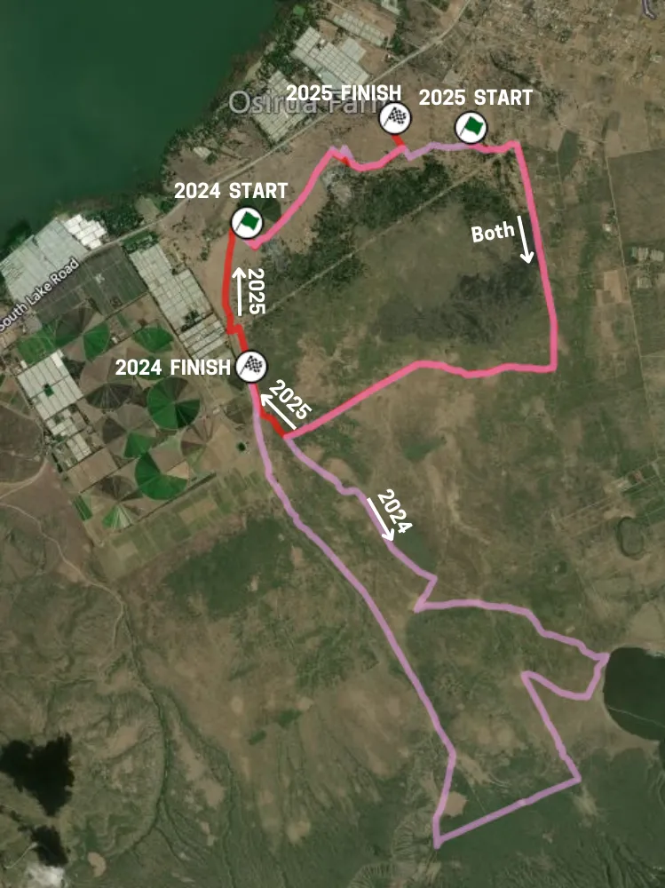
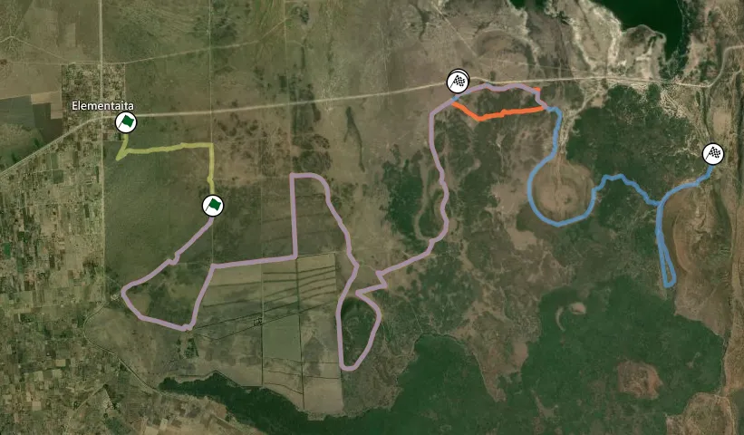
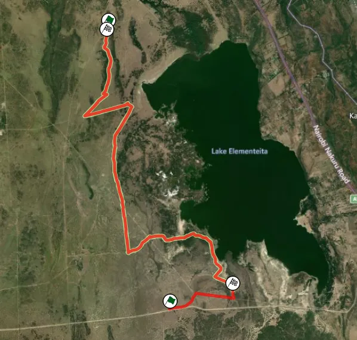

Safari Rally Kenya 2025 - Route Preview
The Safari Rally is the first gravel round of the 2025 WRC season and is the first rally in more than 7 years to be over 380km, since Rally Monte-Carlo in 2018. There are significant changes in the route for the first time since 2022, with 2 brand new stages, and a new Shakedown, as well as tweaks on existing stages. This is more than likely going to be the longest event of the season.
Wednesday
Safari is unique, as in the past years it's been the only rally to have its pre-event Shakedown on a Wednesday. This year is no different.
Shakedown: Sleeping Warrior - 5km
Changes compared to 2024: Brand new stage, uses some parts of the 2024 Sleeping Warrior stage, in reverse. The stage also shares a small section with Camp Moran, Friday's opening stage.

Map of the Sleeping Warrior SD stage (orange). With light blue is last year's Sleeping Warrior and with green is Camp Moran from this year
Stage description: The first kilometer of the stage is shared with the 2024 Sleeping Warrior, only in reverse. The stage then circles around the Sleeping Warrior mountain, with a fast section following, on an open road. At 2.9km there's a series of slow/medium speed corners, before a more technical section, likely for spectators, at around 3.7km. The end of the stage is in a more forested area, and looks to be rough and narrower than the other sections of the stage.
Thursday
Thursday is the opening day of the rally, featuring two stages. Apart from the Kasarani Super Special, which is reversed for this year, there's a new stage, on the outskirts of Naivasha.
SSS1: Kasarani - 4.76km
Changes compared to 2024: The stage is ran in reverse compared to 2021-2024.
Stage description: The Kasarani Super Special is the opening stage of the event, and is on ploughed tracks in a field on the outskirts of the capital city of Nairobi. In 2022, Kalle Rovanpera ran wide on the first corner, and almost rolled his Yaris Rally1.
SS2/19: Mzabibu - 8.15km

Changes compared to 2024: Brand new stage, never used before.
Stage description: Unfortunately there's no onboard for Mzabibu, so this description is only based on satellite imagery. The first 3 kilometers of the stage are on a newly ploughed road on a vineyard, with medium speed corners and straights. A technical, almost mickey mouse section follows, after which the stage becomes faster, using parts of a proper road, running alongside the Malewa river. The stage deviates from that road at about 6km, for a small detour, before rejoining it momentarily. In the last section, the cars will run alongside and through a crop circle.
Friday
Friday is the longest day of the rally at 159km. It's likely to be the season's longest day. It features 4 stages run twice. There's one brand new stage, Camp Moran, and two returning stages from last year that have been modified for this year's event. Geothermal is the only stage that's unchanged from last year.
SS3/6 Camp Moran - 32.2km
Changes compared to 2024: The stage is brand new for 2025. It uses some parts that were used in last year's Sleeping Warrior stage.

Map of Camp Moran (green) compared to last year's Sleeping Warrior (blue)
Stage description: Unfortunately, no onboard of the stage exists at the time of writing, so one can only draw conclusions from satellite imagery for the new sections. The stage starts off in the open, and goes around the side of a mountain. Mid-way through, it enters a densely forested section at 2.7km, and after that, the stage becomes more technical. There's a steep uphill section from 5 to 6km, with the road immediately going downhill afterwards, and joining the route of last year's stage for about 3km. Last year, said road was very rough and rocky.
A very tight junction at 10.5km leads to a big straight, after which the stage becomes very twisty and technical for the next 10 or so kilometers. The two stage routes merge again briefly at 22.2km, on a road that last year was medium-wide, bumpy and had many surface changes, ranging from rough to relatively smooth.
The route then becomes slow and technical from 22.9 to 26.3km, after which there's a fast section, with the stage ending after a downhill stretch on what looks to be a fast road.
SS4/8 Loldia - 19.11km
Roadside action from Loldia in 2021
Changes compared to 2024: The stage is ran in reverse compared to 2024.
Stage description: Loldia is an exceptionally technical stage. Last year it was the slowest stage of the rally, if you exclude the Kasarani SSS. The start of the stage is actually quite fast, with the first 2km being just straights and junctions. After a junction at 1.8km, the road becomes very narrow, being almost a car's width wide, but is still fast.
From 3.75km to 11km, the stage is sinuous, slow and rough, on a very narrow road. It becomes faster after that, with the road also becoming wider after a junction at 13km. The last 6km are actually quite similar to the start, with fast/medium speed sections joined together by junctions, with the stage changing from wide to narrow at different points.
SS5/9 Geothermal - 13.12km
Preview of the stage from 2022
Changes compared to 2024: Identical to last year's stage with the same name.
Onboard of Geothermal from last year's Safari
Stage description: The stage starts off in a bumpy and narrow road, before turning onto a wider, smoother one. At 1.69km, there’s a series of 3 crests, after which it becomes more technical momentarily, with a series of medium speed corners.
Some very rough patches appear at about 4 km, with the stage becoming rougher and narrower at about 5.2km, for a bit less than 1 kilometer, after which the stage smoothens out.
At 7.88km, the stage turns to a wide and smoother road, with many cambered turns. This part of the stage is more reminiscent of Rally Mexico or the Acropolis Rally than the Safari. The last 700m are uphill, on a steep and medium wide road.
SS6/10 Kedong - 15.10km
Changes compared to 2024: Kedong has seen significant changes for this year. The last 19.5km of last year's stage have been removed, and the stage does a loop of sorts, with the last 2.2km of last year's stage being the ending for this year. Some sections have not been used before.

Map of this year's Kedong stage (red) compared to the one from last year (pink)
Stage description: The stage starts off on a narrow and very bumpy road, that is very fast, in a forest. After one kilometer the stage opens up, with the road widening up and becoming a lot more sandy. At 6km there's a big straight, with a big jump at 6.3km, that was a photographer hotspot last year.
The stage leaves the path of the 2024 stage at 8km, with the next part not having been used before. A very fast sections follows, with junctions at 9.7km and 10km. A tricky hairpin at 11.4km leads the crews to the section that was last year's start.
The last part of the stage is again super fast, but on a medium wide road initially, with a sort of mickey mouse bit for the spectators on grassy roads just before the finish.
Saturday
Saturday is another big day, with 3 repeated stages. All 3 stages were in last year's event, but are in a different order, and all three are tweaked for this year compared to 2024.
SS11/14 Sleeping Warrior - 26.88km
Changes compared to 2024: Sleeping Warrior is used for the first time as the opening stage on Saturday, traditionally being the loop's closer, and sees the new section that was used last year being abandoned, as its used in the Shakedown and Camp Moran. This year's stage is essentially the one used from 2021 to 2023, with the start 4km later.

Map of Sleeping Warrior 2025 (red) compared to the 2024 (blue) and 2023 (yellow) editions
Stage description: The stage starts off on a very narrow and grassy road, that is very fast. At 3.4 km there's a big straight with a tricky junction at its end.
Another big straight follows at 6km, with another one just after at 7.7km. Another junction leads the crews to a rougher section, that we've seen in the past become very rutted when there's rain. In the past editions, Sleeping Warrior has been the stage where we've seen changeable conditions and rain.
At 13km there's a very fast but rough section, in a forested area, with dips and bumps. After a hairpin at 17km, the stage is again on open roads. The last section of the stage being generally fast with many flowing corners, excluding the section from 23 to 24.1 km in which the stage passes through a very rough, rocky and narrow stretch.
Onboard of the stage from 2023
SS12/15 Elmenteita - 17.31km
Changes compared to 2024: The stage is in reverse compared to last year, and it’s essentially the 2021 stage with the start extended by 2.5km.

Map of Elmenteita 2025 (red) compared to the 2024 version (light green)
Stage description: The first part of the stage is on an open plateau, and very fast, with straights and fast corners, with a narrower road from the start to 1km, and from 2.2 to 4.5km, with a wider, proper road in the middle.
On the next section, the stage goes into a forested section, and becomes technical and sinuous. The road leaves the forest at 6.5km, and is now more medium speed/fast, but still quite narrow. At 7.6km, there is a tricky double junction that leads the cars into a straight, that has a few kinks, with a chicane of sorts at 8.8km.
The stage leaves that section via a junction at 12.5km. The last section of the stage is initially on a narrow bumpy road, with a big dip at 12.7km. After a straight, there’s a tight hairpin at 14.2km with the stage then being mostly fast, interrupted by a series of slow corners until the finish.
Onboard of Elmenteita from 2.5km onwards
SS13/16 Soysambu - 29.32km
Changes compared to 2024: The stage is ran in the opposite direction compared to 2024.
Roadside video of the stage from 2023
Stage description: The stage starts on a technical and slow road for the first 1.5km before opening up into a big straight at 2.8km. The road remains fast until reaching a fesh fesh section at 5.3km, followed by a more technical part.
At 7.3km, the route enters a small forest section with a big dip, lasting for about 1km. After exiting the forest, the road alternates between medium-wide and narrow sections, featuring a mix of very fast sections and slower corners/junctions until 13.3km.
From 13.3km to 16.3km, the road becomes exceptionally rocky and rough. After this, the stage remains narrow and rough but transitions into a faster, more open section with big straights and high-speed segments.
The final part of the stage, from 24.32km onwards, is technical and tight, basically a "mickey mouse" section, with a series of slow corners before reaching the finish.
Last year, Gregoire Munster broke the suspension of his Puma Rally1 on this stage, and Thierry Neuville's i20 developed an issue with its fuel pump.
Sunday
Sunday is the shortest day of the rally, featuring 2 repeated stages, as well as a second pass of Mzabibu on the first loop of Sunday.
The Malewa stage from last year is no longer present.
SS17/20 Oserengoni - 18.33km
Changes compared to 2024: The stage is identical to last year's.
Stage description: The first 2km are on a very narrow, bumpy and technical road in the forest. The stage leaves that road via a junction, and proceeds onto a faster one, outside the forest.
A massive straight follows at 4km that lasts almost 2 kilometers, before the cars turn onto another fast section. The next part is technical, with the road becoming narrower and generally slow and sinuous, but again with the odd straight occasionally.
The stage becomes faster, with a fast section at 12.4km, with a massive straight following at 13.52km. A very rough section follows until about the 17km mark, before the stage again has a big straight, with a junction leading the cars to the finish.
SS18/21 Hell’s Gate - 10.53km
Highlights from the stage back in 2021
Changes compared to 2024: The stage is identical compared to last year, with the only exception being that the last corner turns right, not left, just like in 2021.
Stage description: The stage is on a medium wide road in its entirety, and it’s one of the fastest of the rally. The section from 5 to 7km is quite tricky, as we saw big rocks being pulled into the racing line last year. The last few km are on an open road, with a tricky junction just before the finish.
Onboard of the stage from 2021
Big thanks to Dimitri Dusart for providing the maps!


Comments